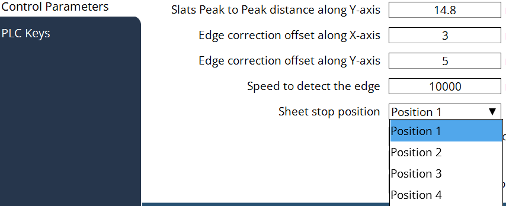

Impostazioni della macchina
Misura margine della lamiera
Esecuzione ordine singolo: l’operatore può selezionare diverse modalità di posizionamento prima di eseguire il programma. Se si esegue il programma con SheetEdgeMeasure, viene acquisito il seguente workflow. Posizionamento CU → Avvio produzione → Conferma popup → Avvio Misurazione lamiera
Modalità piano di produzione: SheetEdgeMeasure è obbligatorio durante l’esecuzione del piano di produzione. La misurazione del margine della lamiera viene implementata automaticamente all’avvio della produzione. Nessun posizionamento CU necessario → Avvio della misurazione della lamiera in base alla posizione di battuta della lamiera e combinato con l’offset distanza di misurazione.
Tipo di carico
Configurazione dell’automazione Mentre un dispositivo di automazione è collegato, il piano di produzione è influenzato dai segnali interfaccia dell’automazione. (Ad es., carico completato, scarico completato, ecc.) Quindi, dobbiamo fornire una configurazione per attivare/disattivare la configurazione dell’automazione. Il parametro dovrebbe poter essere modificato dal cliente, quindi viene inserito nella pagina Generale delle configurazioni della macchina.
Tipo di carico:
a. Nessuno - È la modalità per il carico manuale.
b. Caricatore esterno - È per lavorare con un caricatore esterno.
Posizione battuta lamiera
Definizione posizione di carico lamiere La battuta lamiera per la pila di materiale grezzo nell’intero layout delle macchine può essere impostata in vari angoli. Il dispositivo di automazione ha l’angolo di battuta lamiera corrispondente, quindi anche la posizione di carico lamiere nella macchina ne risentirà. Per questo caso deve essere fornito un parametro. Una volta configurata, in modalità piano di produzione la strategia di misurazione del margine della lamiera sarà regolata di conseguenza.

Offset SheetEdgeMeasure
In alcuni casi speciali in cui la posizione di carico è fissa lontano dalle battute lamiera, i parametri possono essere regolati per spostare la posizione di partenza di SheetEdgeMeasure.